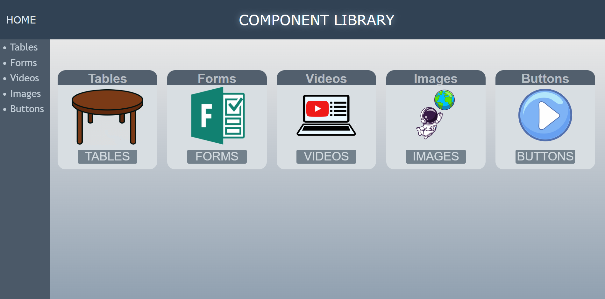
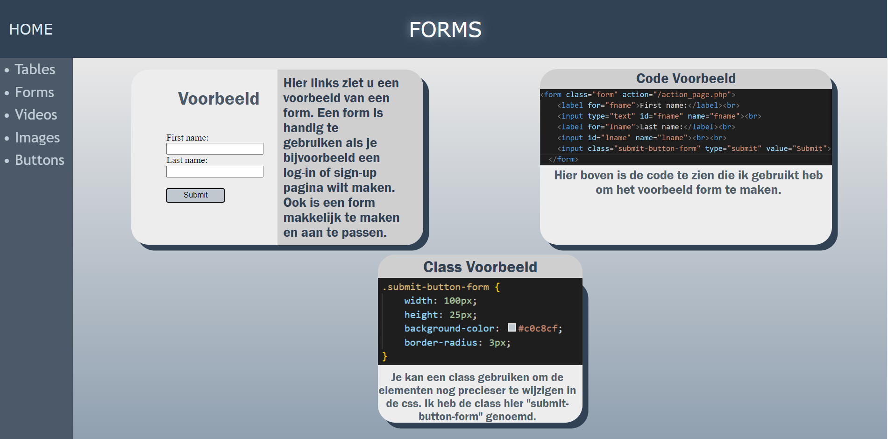

Component Library
The component library was the first website I ever made. It was a project assigned to me during a web development course where the goal was to create a website showcasing different elements such as buttons, images, tables, forms, and more. I had creative freedom for design and layout but had to ensure all elements were easy to find. I faced challenges in making it responsive and spent time researching design trends before finalizing it. Overall, I am pleased with the final result and it was a great learning experience for me. You can see the result below.

